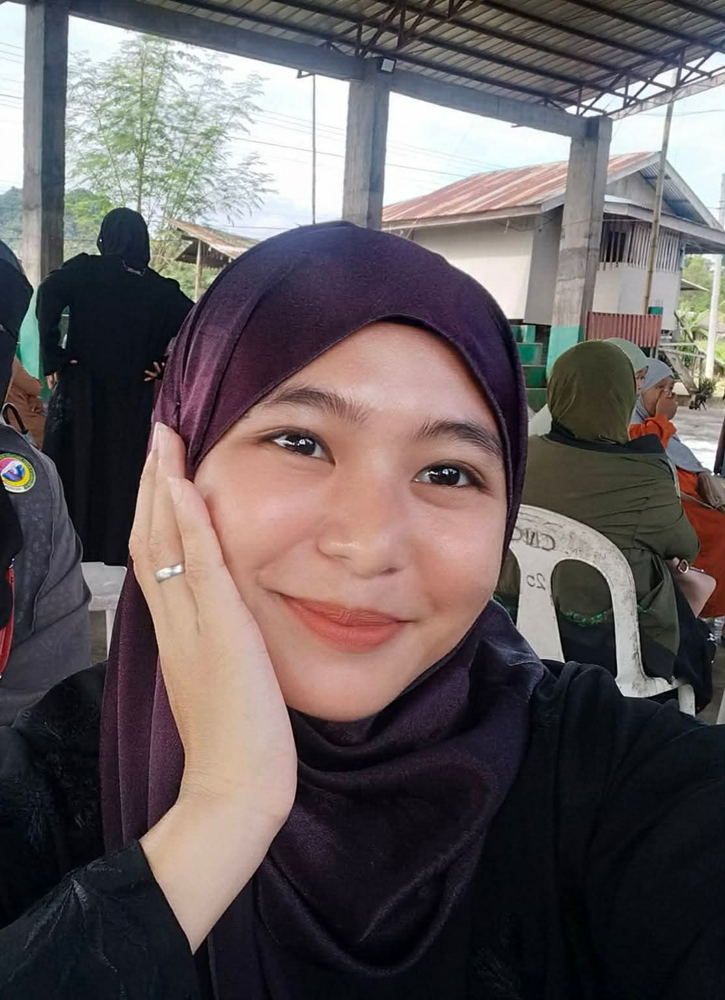

Hi, I'm Anisa Alinog
BSBA Muslim Student
Passionate about my responsibilities as a student, actively engaged in academics, and devoted to serving Allah 🤲

Hi, I'm Anisa Alinog
Passionate about my responsibilities as a student, actively engaged in academics, and devoted to serving Allah 🤲

I'm a BSBA student who values learning, personal growth, family, and faith. As a Muslim, my faith in Islam and love for Allah are an important part of who I am and guide me in the way I live, learn, and pursue my goals. I believe that every challenge is an opportunity to grow, become stronger, and learn something meaningful.
I deeply value my family, who continues to inspire and support me as I work toward my dreams. As a college student, I am doing my best to balance my studies, responsibilities, and personal goals while continuing to improve myself. I may still be discovering the path I want to take, but I am determined to keep moving forward with patience, faith, and dedication. I hope to achieve my dreams while staying true to my values and becoming someone my family and faith can be proud of.
I am a BSBA-FM student at Dr. Aurelio Mendoza Memorial Colleges (AMMC), Ipil, Zamboanga Sibugay. Our school trains us to become competent professionals through business management, financial planning, and leadership.
I also study at Madrasah Taha Al-Islamiya, where we learn Qur'an, Arabic (Nahwu & Sarf), Fiqh, Seerah, Hadith, Tawhid and Lugah. It teaches me to balance Deen and Dunya and stay close to Allah.